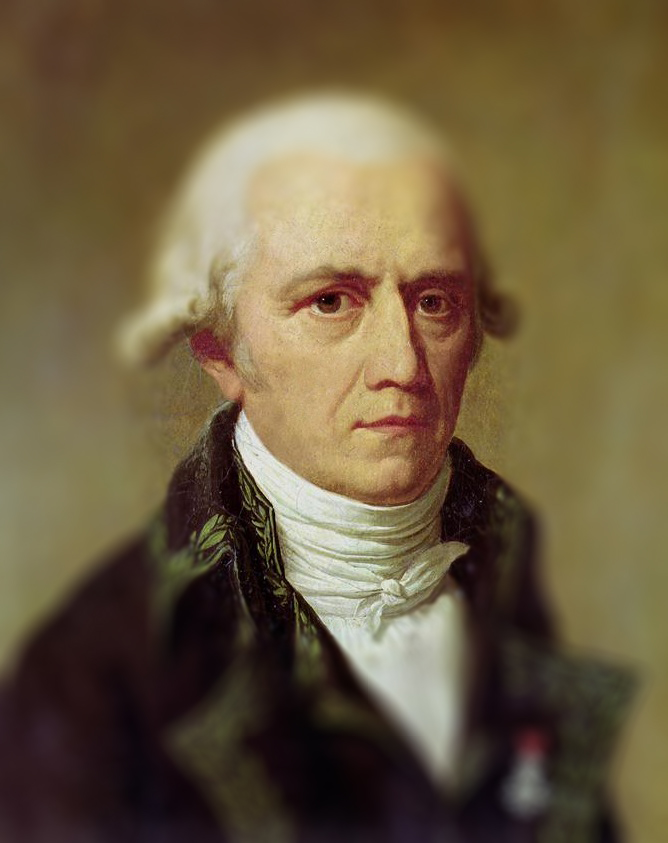

.png)
Jean Baptiste Caballero de Lamarck fue el claro iniciador del pensamiento transformista (Biología Evolutiva de hoy) a principios del siglo XIX, en contraposición al pensamiento mayoritario de la época que postulaba el creacionismo, es decir la creación de las diversas formas animales "nuevas" seguidas de períodos de extinción. Lamarck puso especial énfasis en la indagación de los cuerpos vivos. Su interés en lo viviente lo llevó a definir un campo de estudio que unifica lo que es común a lo vivo.  En 1815 en su obra "Histoire Naturelle des Animaux sans Vertebres", crea el término "Biología" y con ello la disciplina (Lamarck, 1835, I: 49). Lamarck se ocupó de los organismos y sus circunstancias y afirmaba que tales circunstancias no influenciaban, en forma directa, sobre la morfología de tales seres. Al contrario, sostenía que las circunstancias actuaban sobre los hábitos y costumbres y éstas, a su vez, modificaban la organización del ser vivo. Finalmente, esta organización se expresaba en morfologías somáticas diferenciales. En el capítulo VII de la Filosofía Zoológica se puede leer: "De l'influence des circonstances sur les actions et les habitudes des animaux et de celle des actions et des habitudes de ces corps vivants, comme causes qui modifient leur organisation et leur parties" (Lamarck 1873 I:220). Las circunstancias de Lamarck no sólo referían a aquello que hoy se denominan parámetros en ecología (clima, suelo, vegetación, etc), sino que incluían a su vez el modo de comportarse y conservarse de los propios organismos. Así las nociones de Lamarck se aproximan a lo que ahora entendemos por Ecología
En 1869, el alemán Ernst Haeckel crea el término Ecología (ökologie) comprendiendo en ésta el estudio de las relaciones de los organismos con el entorno (umwelt en alemán), incluyendo en sentido amplio todas las condiciones de existencia. La ökologie del autor alemán se fundó sobre la base del vocablo griego oikos que significa patria, casa, residencia, lugar donde se habita. Existe un vocablo muy similar a oikos que es ethos escrito con eta como letra inicial y que significa justamente: patria, habitación, morada habitual
La ecología en el siglo
Es posible ilustrar mediante cuatro ítemes la imposibilidad de comprender los procesos biológico-evolutivos y ecológico-sucesionales desde la termodinámica clásica: Primero: Las leyes de la termodinámica son leyes postuladas sobre la base del ideal de un sistema aislado. Los seres vivos no sólo no son cerrados, sino que son sistemas abiertos. Segundo: Los organismos vivientes por su apertura, se encuentran acoplados en y con su entorno, que no es el caso de un sistema aislado como vimos. Tercero: La enorme diferencia organizacional (para no ahondar en la auto producción de sí) entre una máquina térmica y un ser viviente no permite comprender su deriva entrópica, a menos que se los tome como cajas negras. Cuarto: Los objetos de estudio de la termodinámica clásica cumplen con la idea de equilibrio. La Tierra "suele" ser modelizada como sistema cerrado, siempre y cuando se obvien los millones de toneladas de meteoritos que caen por año conjuntamente con polvo estelar, pero no se puede pensar como aislado por que a él llega todo el espectro de radiación solar.
En ecología, se estudian los procesos, la dinámica y las interacciones entre todos los seres vivos de una población, de una comunidad, de un ecosistema o de la biosfera.
"El ser vivo es inseparable del ambiente, del medio que lo rodea y en el cual desarrolla sus actividades. Entre organismo y ambiente existe un intercambio de acciones y reacciones, y es posible sostener la existencia y realidad de una unidad individuo medio que se llama ecoide"
-Raúl Ringuelet
El medio externo no es una entidad ajena a la planta o al animal (Ringuelet, 1962). El término ecoide que Ringuelet coincidió en designar como "unidad ecológica" fue utilizado en 1912 por Negri, profesor de la Universidad de Florencia (fide Gola et al, 1965)